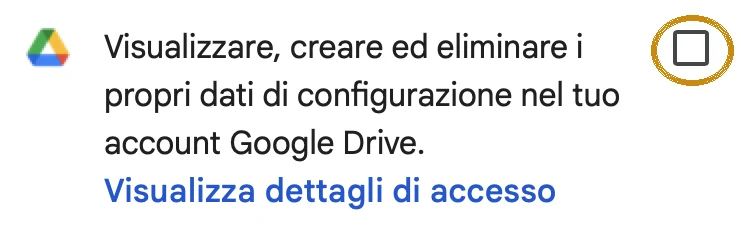

Il Libretto di volo è un'app gratuita per noi allievi: ci si segnano campetti e voli, si tiene un breve diario dopo ogni uscita e si hanno sempre a portata scadenze e documenti. Funziona sul telefono e sul computer, anche senza campo.
1. Installala sul telefono
iPhone
- Apri librettovolo.it con Safari (non da WhatsApp o da altre app).
- Tocca il tasto Condividi, il quadrato con la freccia verso l'alto.
- Scorri e tocca Aggiungi alla schermata Home, poi Aggiungi.
Android
- Apri librettovolo.it con Chrome.
- Tocca il menu ⋮ in alto a destra.
- Tocca Installa app oppure Aggiungi a schermata Home.
Da quel momento la apri dall'icona, come un'app vera.
2. Il primo accesso
- Apri l'app e tocca Accedi con Google.
- Scegli il tuo account Google: va bene un Gmail o qualsiasi altro account Google.
- Google ti chiede il permesso per Drive. Spunta la casella e poi tocca Continua.

La casella da spuntare, cerchiata in giallo.
Sotto i contatori compare la scritta “Su Google Drive” con il tuo indirizzo: vuol dire che è tutto a posto.
3. Cosa c'è dentro
4. Caricare la tessera FIVL
- Apri l'email della FIVL sul telefono e tocca il PDF della tessera.
- Tocca Condividi → Salva in File (su Android: Scarica).
- Nell'app vai su Documenti → Tessera FIVL → Carica PDF o foto e scegli il file.
Numero, nome, associazione e scadenza dell'assicurazione si leggono da soli, e la scadenza finisce tra le Scadenze. Gli altri documenti si caricano allo stesso modo, con un PDF o una o due foto.
5. I tuoi dati
- Tutto quello che scrivi resta nel tuo Google Drive, in una cartella privata dell'app, e una copia sul telefono per usarla senza rete.
- Nessun altro può leggere i tuoi dati: né gli altri allievi, né gli istruttori, né chi ha fatto l'app.
- Se cambi telefono, accedi con lo stesso account Google e ritrovi tutto.
- Occupa pochissimo spazio: meno di 1 MB.
- Per una copia di sicurezza in più apri Impostazioni (l'ingranaggio in alto a destra, o la voce nel menu sul computer) e scegli Esporta. Con Importa la ricarichi.
I dettagli sono nell'informativa sulla privacy.
6. Se qualcosa non va
- Sotto i contatori c'è scritto “Manca il permesso per Drive”.
- Al primo accesso non hai spuntato la casella. Tocca la scritta, poi Riprova, e questa volta spunta la casella di Google Drive.
- C'è scritto “Senza rete” o “Da sincronizzare”.
- Va bene così: le modifiche restano sul telefono e partono da sole appena torna la connessione.
- Non vedo una funzione nuova.
- Chiudi l'app e riaprila, a volte serve farlo due volte. Gli aggiornamenti arrivano da soli.
- Sul computer non ritrovo quello che ho scritto sul telefono.
- Controlla di aver fatto l'accesso con lo stesso account Google su tutti e due.
- Voglio togliere tutto.
- Apri Impostazioni e scegli Esci da questo dispositivo. Per cancellare anche la copia su Drive segui le istruzioni nell'informativa sulla privacy.
Per dubbi, problemi o idee di nuove funzioni scrivi a Dario nel gruppo del corso.